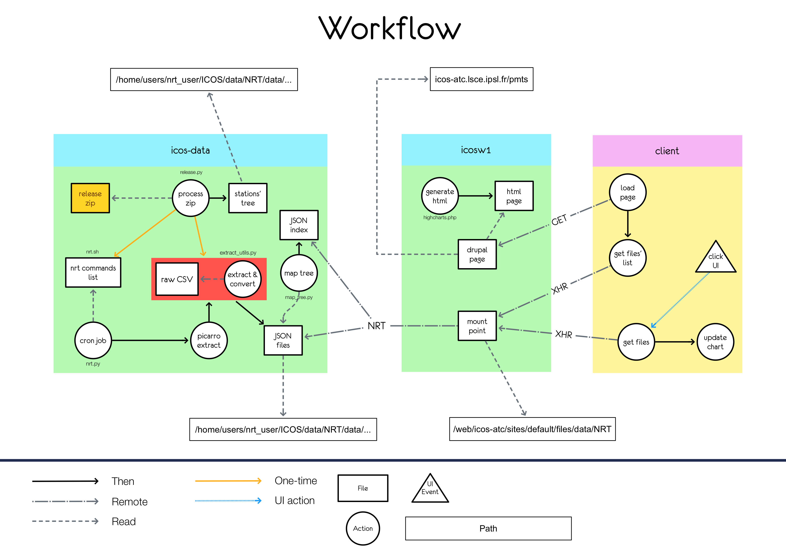

Introduction
The goal of the datavisualization module is to display data from the release alongside NRT data. The data comes from the Carbon Portal. In order to do so, it was decided that the Highcharts.js library would be used.
The global workflow is the following: 
Data-server's side
Step 1
The first step is to process the release file using the release.py script. The job of this script is twofold:
- Create nested folders to reflect the files of the release (located in the
datafolder), which are in turn populated with the JSON-converted release files - Generate a list of commands to be run by cron periodically (
nrt.sh), which job is to run the nrt extraction
Step 2
The second step is to run the nrt extraction and convert the result into web-processable data in the form of JSON.
The nrt extraction is simply done by running the generated nrt.sh file. It runs a command for each entry in the release file (making use of the nrt.py file to convert the csv files into JSON ones).
The resulting data lives in the data folder.
Eventually, an index file listing the different files available is created with the map_tree.py(the folder tree is mapped). The resulting file is index.json located in the data folder (at root level).
Result
At this point, the data is available and in the correct folders. Moreover, the index.json file lists the available paths. It is now up to the web server to fetch and parse this file in order to be able to request sepecific data files.
Web-server's side
The web server's data folder is an NFS mount point. It comes from the data server.
The datavisualization JavaScript module proceeds as follow:
- Fetch the
index.jsonfile - Process the file
- Render the interface using the processed file
- On "get data" click:
- Get the data link
- Fetch the file
- Add the result to the chart